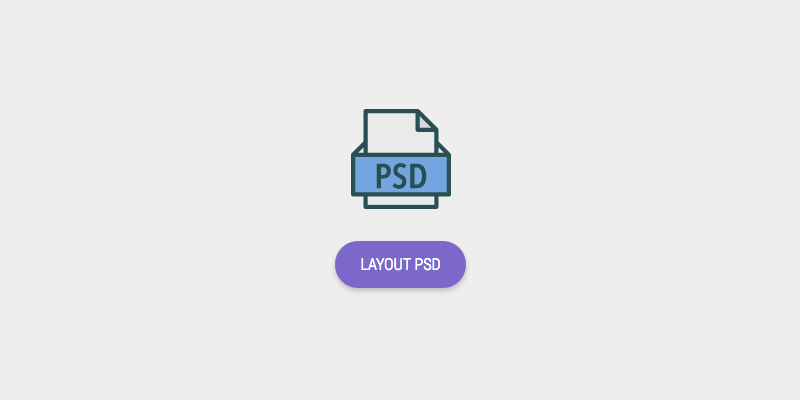
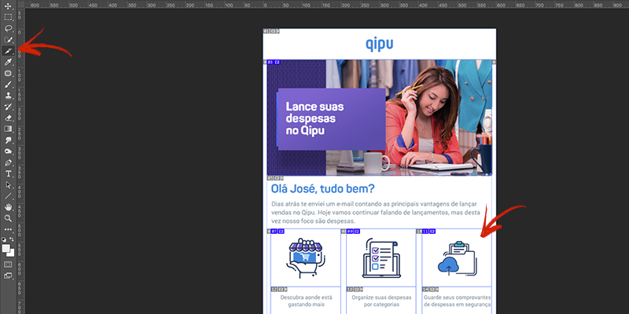
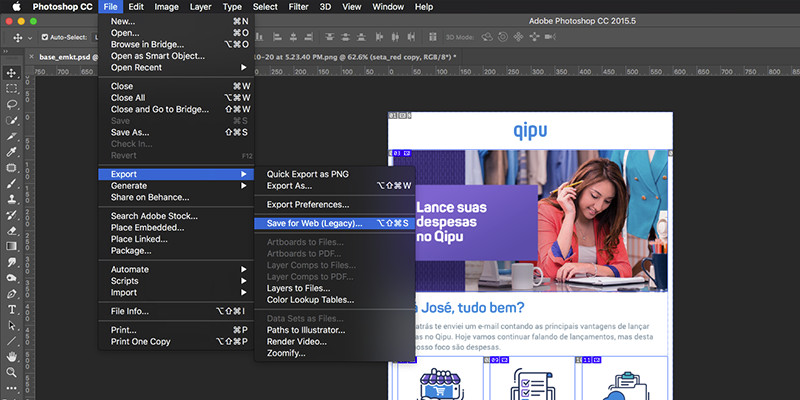
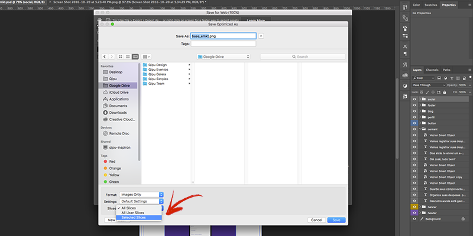
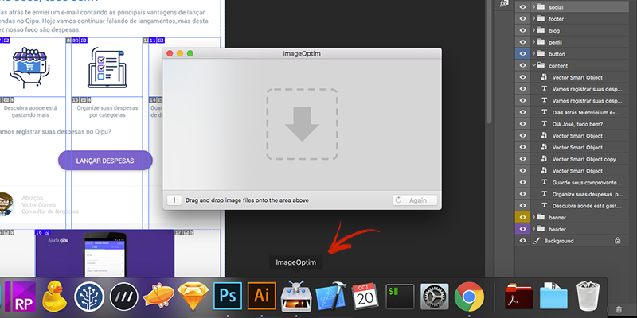
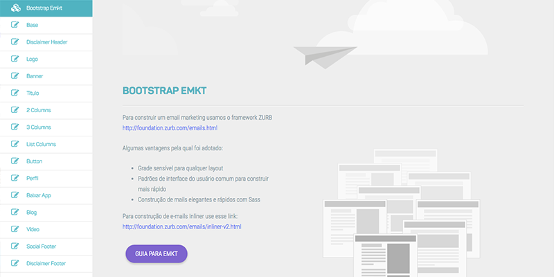
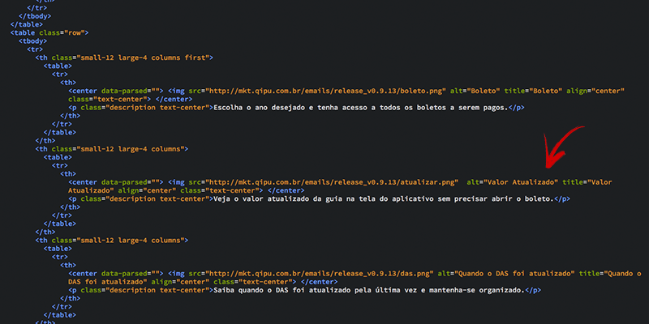
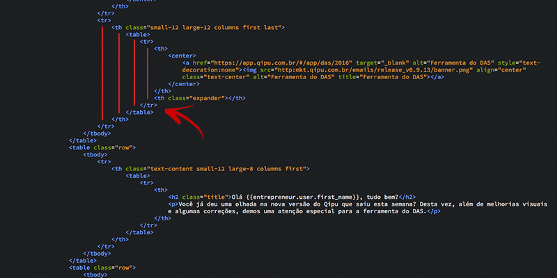

Guia para emkt
Na montagem do html do email marketing não adianta seguir as melhores práticas de padrões web. A maioria dos clientes de e-mail não aceitam muitos dos atributos do CSS e nem conhecem as novas tags do HTML5. Por isso vamos lembrar de processos para montar o email maketing. Referências: Tableless, Campaignmonitor, Mailchimp, Templateria.
PSD Pattern
Para começar você pode baixar o Layout PSD para montagem do emkt. Ou se for montar do zero, não esqueça que o padrão é de 600px de largura.
Usando o Slice Tool
Sempre use o "Slice Select Tool" para cortar e renomear cada imagem do template montado. Lembrese de dar ZOOM para não sobrar pixel's da imagem.
Salvando as imagens
Ao salvar as imagens em "SAVE FOR WEB", verifique se deixou em 72 ou 150 DPI e de preferência em JPG 100% maximum para uma melhor qualidade.
Salvando as imagens
Ao selecionar os Slices para salvar, lembre-se de deixar habilitado o "Selected Slices".
Otimizando imagens
Use o programa ImageOptim para realizar uma melhor performace para imagens utilizadas no emkt. Após isso suba no servidor S3.
Html do bootstrap
Use os HTML's do bootstrap e lembre-se de ir substituindo os links das imagens e os texto que estão no briefing.
Tags do html
Lembre-se de substituir as tags ALT, TITLE e ALIAS com o nome das imagens e os links também.
Alinhado html
Alinhar o código HTML contribui para uma melhor leitura, use o alinhamento do editor (command+shift+L extensão 'beautiful' para o brakets).